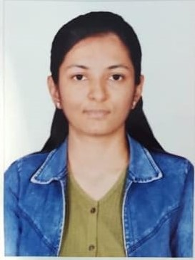

CTK
Credential & Talent Knowledge
Home
Verify Certificate
Contact

OK
Manisha Soni R
Network ENgineering
Verified Student
Scan to Verify
Student ID
a63f148c-33d6-4d83-8866-db2e042c9fdc
Skills
TCP/IP • DNS • IP Addressing • Subnetting • CIDR • OSI Model • Router Basics • Switch Basics • VLAN • NAT • DHCP • Routing Basics • OSPF (Basic) • RIP • EIGRP
75%
AI Readiness Score
Network ENgineering
75%
Certificates
Verified
Network Engineering
Issued by CTK
Verified
Projects
Designed and configured small enterprise networks
Student project verified by CTK.
Badges
CTK
TCP/IP • DNS • HTTP/HTTPS • Subnetting • VLAN • OSPF • RIP • EIGRP • NAT